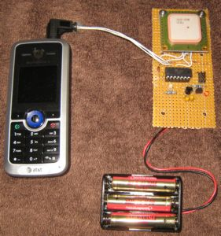
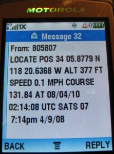
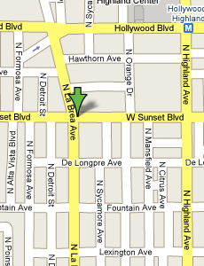

Intro | Build it! | Command reference | How it works | Download | Customize | Todo | User forum
Open GPS Tracker
  
Welcome to the Open GPS Tracker site. The Open GPS Tracker is a small device
which plugs into a $20 prepaid mobile phone to make a GPS tracker. The Tracker
responds to text message commands, detects motion, and sends you its exact
position, ready for Google Maps or your mapping software. The Tracker firmware
is open source and user-customizable.
Project status: Current build is 0.17A assembled 05/09/2008
We currently have second-generation stable firmware and a reference hardware
design. This combination has been extensively tested in moving vehicles and found
to be reliable. There have been no hangs since build 0.14, and no lost messages since
build 0.17 was released.
The phone is available for free, without a contract, until May 10 - see the forum for details.
All parts are available from Mouser Electronics, and the phone is
available from Target, Walmart, or Radio Shack. This site provides the firmware
with source code, theory of operation, parts list, and exact assembly and
checkout instructions. If you can solder, this is a one-sitting project. No PC
board or surface-mount capability is required.
If you want to build a tracker and do not have an AVR programmer, I will program
a chip for you. Please contact me in email. We intend to have kits, PCBs, and/or
assembled units available for purchase soon. The firmware will remain free and
open source.
The current supported hardware platform is:
- Tyco Electronics A1035D GPS module
- Motorola C168i AT&T GoPhone prepaid mobile phone
- Atmel ATTINY84-20PU AVR microcontroller
We intend to support more phones and GPS devices in the future.
The Tracker's features are competitive with, or better than, many commercial products:
- SiRFstar III receiver gets a fix inside most buildings.
- Sends latitude, longitude, altitude, speed, course, date, and time.
- Sends to any SMS-capable mobile phone, or any email address.
- Battery life up to 14 days, limited by mobile phone. Longer life possible with external batteries.
- GoPhone costs $10 per month for 1000 messages per month.
- Configurable over-the-air via text message commands.
- Password security and unique identifier.
- Manual locate and automatic tracking modes controlled via text message.
- Automatic tracking mode sends location when the tracker starts moving,
when it stops moving,
and at programmable intervals while moving.
- Alerts when user-set speed limit is exceeded.
- Retains tracking messages if out of coverage, and sends when back in coverage.
- Retains and reports last good fix if it loses GPS coverage.
- Remote reporting of mobile phone battery and signal status.
- Extended runtime mode switches phone on and off to save battery life.
- Watchdog timer prevents device lockup.
- Firmware is user-customizable with a $35.91 programmer and free software.
In addition to being a GPS tracker, the firmware is easily modified to monitor and control
anything from a weather station to a vending machine via text messaging. Please contact me
for custom development.
Contact email: mike <at> opengpstracker <dot> org or use the forum.